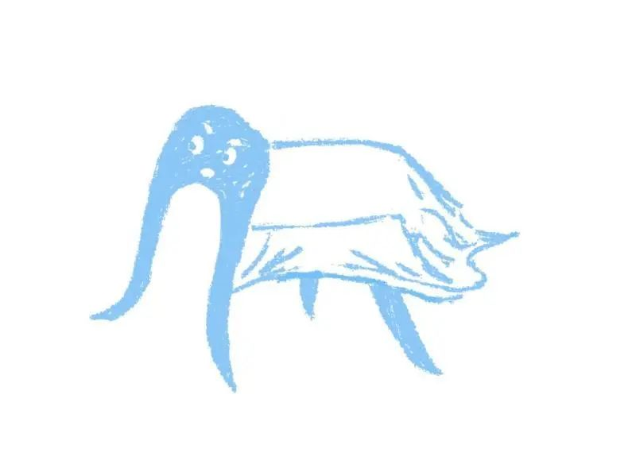
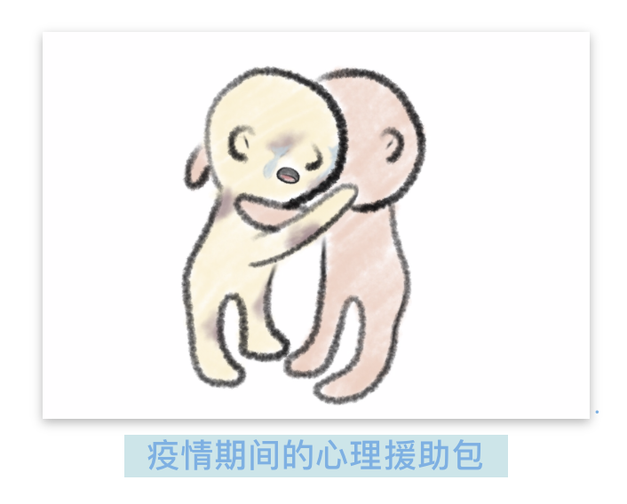
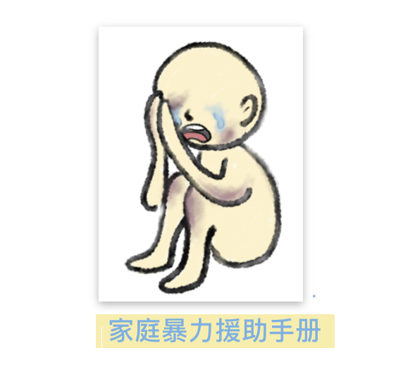
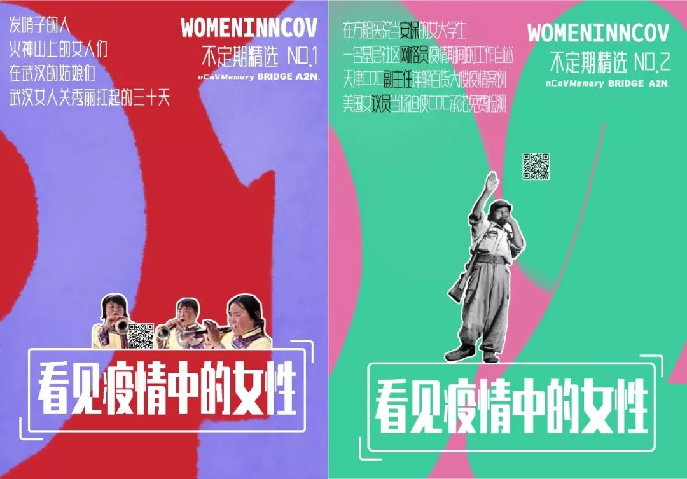

疫情下的“民间辟谣志愿者”_大风号_凤凰网
原文链接 备份链接 1月20日开始，围绕新冠肺炎的各类信息进入爆发期。 “板蓝根可预防肺炎”、“抽烟喝酒可抵御病毒”，在谣言四起的同时，23日我在微信朋友圈注意到，一条名为《接力编辑：关注新型冠状病毒的可靠信息与谣言》的石墨文档被频繁转 …
我刚接触到床位组的时候，ta们的微博简介只写了一句“独立民间公益团队”。组内的小伙伴表示，在没有微博之前，ta们总会被误解为是某个组织内部的床位组；即使有了微博之后，也依旧会被误认。于是ta们删除了关于”床位核实“的介绍，只保留了“独立民间公益团队”这一句。
除了武汉地区的床位信息核实之外，床位组其实还做了很多很多事情，包括武汉地区的导诊、医院地图、各类患者就医、购药指南，另外还有防骚扰、心理援助、反家暴援助手册等等。发起人床仔说，决定要做这些内容，大多只是因为”我们是唯一一个在做这些的公益团队，又确实有需求，所以就必须做下去“。

图1 床位组给床仔的画像
“我们是唯一一个做床位核实的小组，所以必须做下去”
文婧：可以简单介绍一下床位组吗？
床仔：床位组来自Simo小组的一个群。当时群里有一位小伙伴看到网友整理的床位信息表，觉得内容很有价值。一月末，我和她一起找到了创建表单的网友，开始维护这张表。那时候我们有八九个人，后来随着表格的事宜增多、需要电话核实的工作量也增多了，现在有大约四十个人左右。对于电话核实的工作，我们有排班表，分工每人打哪些表格上的哪些电话，并且确定每天打几遍、什么时候打，另外还有些人主要负责海报和设计。
文婧：床位组做过哪些项目呢？新项目是因为患者需求而开启的吗？
床仔：床位组的工作是围绕着《武汉市定点医院床位医疗信息合集》和《武汉市非定点医院信息合集》（下简称《定点表》《非定点表》）这两张表格展开的。在电话核实医院床位信息的过程中，我们收到了一些除了床位信息之外的患者需求，于是针对需求整理出一些“资料包”，供他们使用。比如《居家隔离指南》《心理援助信息》《透析病人就医指南》等。到了二月中下旬，我们开始做两张床位表之外的一些志愿工作。新项目除了根据患者需求来做针对性的补充之外，也会参考卓明团队的《湖北省新冠病毒危机卓明形势报告》（下简称《卓明报告》）。这份报告里会分析接下来一段时间志愿者服务的需求和缺口，我们则会根据这方面的信息来做调整。

图2 《武汉市定点医院床位医疗信息合集》首页截图
文婧：当时为什么决定做《定点表》呢？具体是怎么做的呢？
床仔：我们看到《定点表》后觉得这件事有需求也有意义，可以解决“因医疗信息不透明，而导致患者白跑/不知道去哪里就诊”的问题。我们首先会整理医院清单、收集对应的地址和电话。然后按照电话个数安排每张表格的核实人数，按照紧急程度安排核实频率，按照不同需求总结需要电话核实的问题。这样的信息核实做起来并不容易，即使安排每位小伙伴打15-20个电话，也需要非常多的人力和良好的沟通。我们还有在海外的小伙伴，基本可以做到全天24小时在网上收集求助信息、跟进床位信息。但由于确实有很多患者需求，而且我们是唯一一个系统性地根据表格一家一家医院去核实的小组，所以我们必须坚持做下去。
文婧：后来卫健委也开始每天公布定点床位信息表了，这与你们的表格有什么不同呢？
床仔：就我们的理解，国内新冠肺炎相关的需求大致分为三类：疑似患者需要核酸检测、已确诊病人需要床位，以及类似孕产妇检、肾衰竭透析患者等有特殊需求的病人。卫健委的床位信息公布得比较晚，且只有定点医院的床位信息，不区分医院是否能满足特种患者的需求，有时候无法真正帮助到患者。我们在电话核实的过程中，除了核实是否有床位外，还会确认接受哪些特种病人、面向的病人类型（转院/社区）等；对于核酸检测的需求，会确认有多少配额、面向哪些病人、需要哪些特定的检测要求、特定的资料、结果何时、以何种形式告知等等。
“志愿工作是有边界的。只有调整好了自己，才能更好地帮到更多人。”
文婧：你们是怎么想到要收集患者信息的？除了给到床位信息和帮他们打电话，你们还会做什么来帮助个人求助者呢？
床仔：最开始的时候，我们在表格最后设置了一个公开编辑的“留言板”，希望大家帮我们一起更新床位信息。但留言板上却收到很多个人求助信息，于是我们重新开了一张表单，专门收集个人求助。结果刚开没多久，就收到了大量的信息。由于求助量太大，我们无法全部处理，就把一些患求助信息转给别的有医疗资质的志愿小组。当然，我们也会主动了解政府政策，比如雷神山、火神山、方舱医院的建设进度等，给求助者一点信息和希望。但我也明白，当时那个阶段，政府无论以多快的速度建设，也无法立刻解决床位紧缺的问题。我们这些民间志愿者力量更小，能做的真的很少。所以有段时间我们小组的群里整体状态都很低落，甚至影响到了我们原来的志愿者工作。

文婧：如何应对志愿者情绪低落的问题呢？
床仔：我们求助了NCP的关怀小组，以及阿夏桑，ta们给了床位组志愿者一些指导。帮助我们了解“志愿者如何摆正自己的心态”，以及“救援的边界”。在面对这些重大灾难的时候，总有许多我们没法做到的事情。作为志愿者，我们也要留一部分时间给自己的生活。曾经有一段时间个人求助的信息非常多，并且每一个人的求助都很凄惨，使得大家的情绪都很低落。为了防止低落情绪的蔓延，让大家可以更专注于我们能做和要做的事情，有段时间我们定下规矩不允许往群里发个人求助信息。每个成员对求助信息的感受程度不同，对悲伤情绪的处理能力也不同。我也会私聊那些情绪波动比较大的小伙伴，给ta们单独拉一个群，聊一些更轻松的话题。
文婧：如果你对求助信息感到麻木，是否会因此愧疚呢？
床仔：我觉得“不持续因为疫情而处于情绪低落的状态”不代表对这些求助信息麻木，作为志愿者也不用感到愧疚。因为这些惨痛的事情并不是我们造成的，不是志愿者的错。如果说我们应该怎么做，我想还是更多地去考虑“我们还能做什么”吧。
“这里有志愿服务的缺口，我们就想着能不能做点什么”
文婧：你们的文档一般什么时候会停止更新呢？停止更新后，你会觉得之前做的事情没有意义吗？
床仔：只有很少一些表格停止了更新，大多数表格因为需求的减少，而降低了更新频率。比如《定点表》，由于建成了方舱、雷神、火神，以及新增了定点医院，舒缓了新冠患者的就医压力，所以需要核实的频率降低了。另外，政府和社区介入比较深，有些医院即使我们问到了床位空闲，患者也必须通过社区才能入住，通过《定点表》能给予大家的帮助就非常有限了。加之我们更强烈地感受到武汉当地非新冠病人看病难的问题，于是2月11日开始，我们的工作重心就转向了《非定点表》的核实。我觉得至少到三月中旬，部分科室的就诊需求依旧紧张。至于“意义”，我觉得我们做的这些事情，只要在那段需要的时间发挥它的价值就够了。就像是我们志愿者工作也会随着疫情的结束而结束，但不代表它结束了我们之前做的事情就没有价值。
文婧：在非新冠的一页信息核实和就医指南里，为什么你们特别选了“透析肿瘤指南”来做呢？
床仔：第一，在非新冠的求助信息里，透析（尤其是要化疗的）、肿瘤的求助患者特别多。第二，我们小组里有医学背景的小伙伴们，也觉得这段时期相关资源将会紧缺。于是我们决定做肿瘤透析相关科室的电话核实。我们依旧还是先了解这些需求对应的科室、再决定给哪些医院打电话。在这个过程中，随着一些非定点医院被定为了定点医院，需要电话核实的医院、数量、话术都一直在变化，我们也会根据这些变化进行调整。到目前为止，肿瘤化疗的医疗资源依旧紧缺。因为能提供这方面医疗资源的医院并不多，而很多这样的医院又被列为定点医院了。许多患者就医依旧困难重重。

图4 看见疫情中的女性
文婧：2月中旬后，你们为什么做了《隔离区反性骚扰指南》《反家暴手册》呢？
床仔：当时床位信息核实的工作量减小，但我们小组还希望能做更多的事情。我们看到《卓明报告》里提到了隔离区可能会发生性骚扰，而且方舱医院也总有些“浪漫化”的故事报道，让我们觉得《隔离区反性骚扰指南》是有价值的。另外，研究统计疫情期间家暴的发生率是平时的三倍，一方面疫情让家暴在公共生活领域更不可见，另一方面“无法外出求助”制约了受害者的反抗途径。所以我们觉得这些内容有宣传科普的价值，我们就做了这些海报和文档。
文婧：为什么床位组那么关注女性向的议题呢？在疫情中关注女性议题有什么特别的价值？
床仔：除了《隔离区反性骚扰指南》《反家暴手册》，我们还参与编辑了《看见疫情中的女性》，并且持续关注“疫情+女性“的相关话题。我们小组的女生比例非常高，我甚至觉得志愿者团队的女性比例都比较高。也许是因为女性平时就会受到很多的不平等待遇，所以对疫情中的苦难就更容易共情，更愿意亲身帮忙解决。床位组的小伙伴平时比较关注这些议题，于是在志愿者工作中，就更愿意做相关的科普了吧。我觉得在疫情中关于女性议题确实有特别的价值。或许，当我们所有人都感受到了权利的缺失，才能对女性普遍的权利缺失有一点共情。
“可读性是我们追求的”
文婧：你们现在主文档的阅读量是多少？为什么一直选择用石墨呢？
床仔：文档在2月中旬的时候有大约50万的阅读量，后续因为《定点表》的信息更新较少，所以阅读量涨得不多。关于内容的呈现，其实我一开始就想过要做成app，这样交互更好。但是做成app后意味着灵活性的降低。我们的工作需要一直根据不同的患者需求，调整重心和表格排版，做成app后要改架构非常困难。而如果继续放在石墨，内部来拓展内容会便捷很多。也是基于灵活性的考量，我们没有使用一日一更的公众号。
文婧：文档的设计是谁来做的？保证文档的可读性是你们追求的吗?
床仔：我会先把文档需要包含的内容、关系做成思维导图，并在文档内搭好框架和超链接，再交给负责设计的小伙伴来做美化。保证文档的可读性是我们在追求的。我觉得既然没法把床位信息做成一个app，那也至少要以产品的思路，把内容做得更好用、好读。另外，对于内容传播方面，对“实时更新”需求比较少的内容（如《隔离区反性骚扰指南》《反家暴手册》等），我们更倾向于带上二维码后，用海报的形式在各个平台上传播。我们还会通过与其他志愿小组的合作、线下公益组织，来一起推广文档。

“人应该要主动承担”
文婧：你觉得正在经历疫情的我们这代人，成为志愿者、为防控疫情做出贡献是一种使命吗？
床仔：我觉得“使命感”的叙事有点宏大，我更愿意把它理解为“责任感”。这不止是这个时代年轻人的责任，也同样是其他所有人的责任。我们的社会是由社会中的每一个人组成的。我也许会被历史的洪流裹挟进去，不得不面对这些。但我们应该主动一点，因为当更多人主动承担了，也许就可以开辟出一条路。
文婧：对于做志愿者，你有什么比较深的感受想分享呢？
床仔：我觉得有两点。首先，我们都是通过疫情而联系起来的志愿者，我们息息相通，这样的联结是很珍贵的；和我们接触到的患者、医生的联结也是珍贵的。其次，科层、等级制度在床位组的志愿工作中并不存在，但我们依旧做了很多事情，这样的经历让我对未来组织形式、管理方式的变化有很多的想象。
文婧：你觉得我们这些通过网络参与的志愿者，有什么不可替代性或独特性吗？
床仔：当地志愿者有当地志愿者的价值，网络志愿者也有我们的不可替代性。当我们亲身经历一件事、有了感性的认知之后，可能就没有那么理性了。如果我们能稍微跳出一些，或者站在远一点的地方来观察疫情，也许更能知道“我们还可以做什么”。

图6 看见疫情中的女性不定期精选
后记
在和床位组小伙伴的持续接触中，我听到最多的一句就是”我们要不要再做一下……“。除了继续更新之前的《非定点》表单之外，妇女节当天，床位组与A2N、选编小组一起整理了《看见疫情中的女性》文章选编，并在接下来的日子里持续更新；疫情被定为”全球大流行“后，ta们迅速整理了《线上义诊资源汇总》《全球各地民间自救组织合集》，帮助海外学生、华人自助互助。目前，床位组也发起了《国内志愿者经验总结》，整合各个小组在疫情中的行动经验，供在海外的华人或其他有需要的人士复制参考。床位组也在继续关注更多疫情之外的社会议题。
志愿者工作不是与官方抢时间，而是弥补官方政策还未得到及时落实期间的空缺。我们默默开始工作，也终将默默结束工作，但这其中我们还能看到更多人的需求，我们还能做更多更多。
撰稿 | 文婧
设计 | 猫猫
排版 | 一尘
策划 | A2N《行思路》小组
校对 | A2N《行思路》小组
[ 未经授权，不得转载 ]
本次疫情中，有许多民间志愿者小组参与了支援活动。它们在专业机构介入之前，各展所长帮助疫情严重地区共度难关。这些志愿小组因何而建立，如何保证自己的独特性和实用性？在志愿活动中遇到过什么样的困难、经历过什么样的蜕变？在专业机构逐渐接过话语权后，又如何反思自己行动的意义？
A2N深度项目《行思路》将对话这些民间志愿小组的成员，带你透过一个个正在行动和思考的“我”，领略“我们”曾经走过和正在前行的路。
相关阅读

A2N疫情志愿组是
抗击新型冠状病毒肺炎的
民间志愿者小组
致力于传播真实、有价值信息
让人们认识到疫情的真实情况
从而更好地抵御病毒、减少传染

微博关注
@A2N抗击新型冠状病毒
@A2N翻译科普资讯
扫码参与留言互动
↓ ↓ ↓

欢迎点击 阅读原文 ，了解更多关于床位组的故事
原文链接 备份链接 1月20日开始，围绕新冠肺炎的各类信息进入爆发期。 “板蓝根可预防肺炎”、“抽烟喝酒可抵御病毒”，在谣言四起的同时，23日我在微信朋友圈注意到，一条名为《接力编辑：关注新型冠状病毒的可靠信息与谣言》的石墨文档被频繁转 …
原文链接 备份链接 这是系列报道的最后一篇。从 2 月 4 日至今，在为期两周的时间内，我们尽力了。这种「尽力」自有一种局限性：无论是体量、时效，抑或视野，甚至报道体例，都不足以为我们的力不从心开脱。但我们又持有一丝欣慰：这种带有《T》中 …
原文链接 备份链接 文｜陈恕行 📍 发自美国湾区 1 南海岸的二月已经有了初夏的感觉，从暖风中穿过，阳光里能清晰地看到一粒粒金黄的花粉从树上纷纷落下。 每天下午两点，我录入完微博上最新的求助帖，走出图书馆回家。等着国内的志愿者伙伴们醒来前 …
原文链接 备份链接 关注并星标消费新声 不错过泛消费任何最新动态 从这个物资对接平台的建立、运作中，我们看到互助的力量。 作者 | 赵烨楠 编辑 | 罗立璇 1月24日，中国春节的大年三十、武汉“封城”的第二天。 在大量患者涌向医院的情况 …
原文链接 备份链接 纽约州计划在纽约市曼哈顿西区的贾维茨会议中心建造一所方舱医院，大约能提供1000个床位。加州和华盛顿州也会建设类似的医院。 文 | 刘朝晖 中国的方舱医院已经休舱，意大利、西班牙、美国、俄罗斯、伊朗等许多国家结合本国国 …